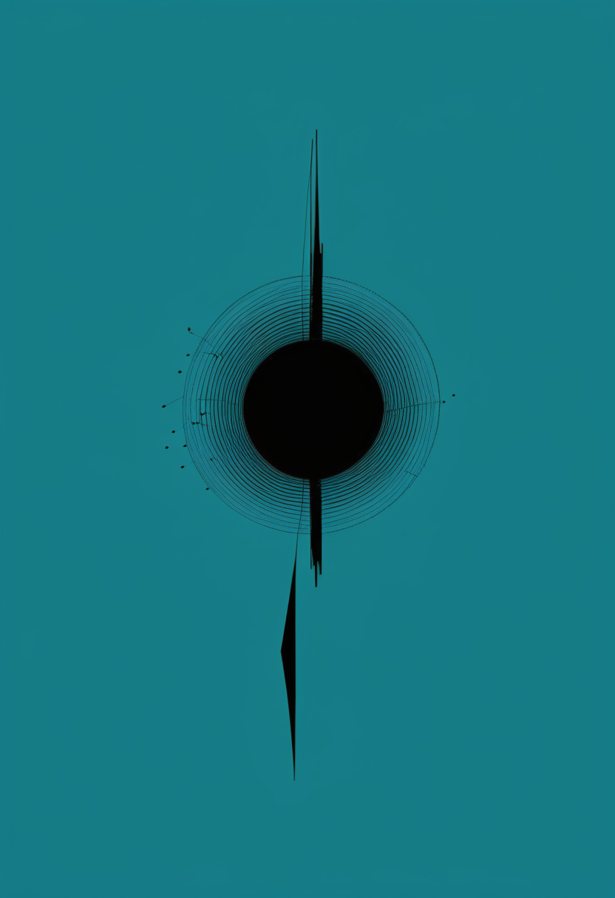
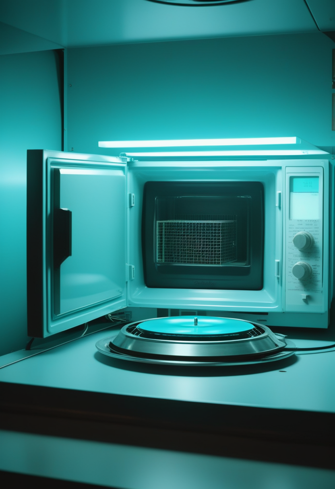
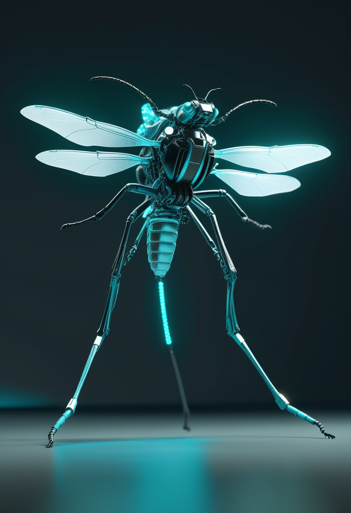

土曜日の便り。DRCのブンディブギョ型エボラが7州目に達した。9月11日、これまでの6州のいずれとも接していない北西部スュド・ウバンギ州で検査確定例が発表され、患者はコンゴ川を船で下って同州に入り死亡していた ― 全国の累計は9月9日時点で確定6,942例・死亡3,349人に上る。命の章では、アピテグロマブのPDUFAが残り18日となり手元資金は約5億ドルと説明されたことに加え、高用量ヌシネルセンの最終結果がプラトーを越える改善を示したこと、サラネルセンの試験帯が発症前投与にまで広がったことを伝える。自由の章では、臨床試験が終わったあと脳内に残る装置の保守責任という新しい論点、CorTecの2件目のFDA指定とButterfly Network・Merge Labsの独占供給契約、視線とタッチを縦続させるGazeTuneを報じる。基盤の章では、エボラの7州目到達に加え、全国値が6,942例・死亡3,349人に増えたこと、米国の麻疹が3,294例へ最多を更新したことを伝える。畏敬の章では、淡いクエーサーの正体が超大質量星を抱える銀河だったこと、ボゾニック量子符号の操作が1,000倍速くなったこと、糖原病遺伝子治療GENGLYCOSの96週データを紹介する。美の章では、ショウジョウバエの全脳コネクトームが身体を動かす制御器になったこと、デジタルツインを尊厳の象徴的延長と読む論考、認知主権をグローバル・サウスから問い直す議論という、三つの『人間のデジタル化』を取り上げる。
DRCのブンディブギョ型エボラが7州目に達した。9月11日、北西部スュド・ウバンギ州の州知事代行が検査確定例を発表した。同州はこれまでの6州のいずれとも接しておらず、西部での確認は初めてである。患者はルワンダ、ウガンダ、イトゥリ州を旅したのちキサンガニで発症し、コンゴ川を船で下って同州に入り死亡した。既存6州との疫学的連鎖は示されていない。全国の累計は9月9日時点で確定6,942例・死亡3,349人。東部に閉じていた流行が、河川交通に乗って国土を横断した。
Scholar Rockのアピテグロマブは、FDAのアクション日(PDUFA)である9月30日まで残り18日である。9月9日のCantor Fitzgeraldグローバル・ヘルスケア会議で同社は、FDAが残す承認上の論点は製造コンプライアンスのみで、有効性・安全性ではないと説明した。代替の充填・仕上げ施設はすでに確保済みである。手元資金は約5億ドルで、規制対応、商業化、製造、パイプラインを同時に支えられるとする。2025年9月22日の完全回答書から、ちょうど1年あまりの地点にあたる。承認されればSMA初の筋を標的とする治療となる。
ヌシネルセンの高用量レジメンが、既存の使い方の限界を押し上げつつある。第2/3相DEVOTEの第B部・第C部の最終結果はMDA臨床科学会議(2026年3月11日、オーランド)で報告された。50 mgの導入投与を14日間隔で2回行い、以後28 mgを4か月ごとに維持する用法で、シェーム対照に対しHINE-2、血漿ニューロフィラメント軽鎖、無イベント生存・全生存といった副次評価項目で優った。非盲検長期継続のONWARDでは、従来の12 mgから高用量へ切り替えた人に、安定期(プラトー)を越える改善が忍容性を保って観察されている。FDAは2026年3月にこの高用量レジメンを承認したと報じられている(報道ベース、要確認)。
次世代アンチセンス薬サラネルセン(BIIB115)は、2026年6月のFDAブレークスルーセラピー指定に続き、第3相STELLAR群の3試験が動いている。本紙が前号までに扱ったのは、遺伝子治療を受けたのち臨床的に十分でなかった乳児への追加投与試験(NCT07444450)だった。これに加え、発症前の遺伝学的診断済み乳児を対象とし、症状が出る前の投与が運動発達に与える影響を調べる試験(NCT07221669)も登録段階にある。年1回投与を狙う薬剤の評価範囲が、発症前から遺伝子治療後までの帯に広がった形である。根拠は第1b相の探索的所見で、運動機能の改善とニューロフィラメント低下による神経変性の減速が示されている。
今日のSMA欄は、3本とも「いつ、どれだけ」の話である。アピテグロマブは承認の日付、高用量ヌシネルセンは用量、サラネルセンは投与を始める時期。薬が効くかどうかはもう争点ではなく、どの時点でどれだけ入れるかが機能の差を生む段階に来ている。プラトーを越える改善が用量で得られたという知見は、既に治療中の人の選択肢を組み替える。
実験的な神経デバイスの臨床試験が終わったあと、参加者の脳に入ったままの装置をどうするかという問題が表に出てきた。試験後も特別アクセス制度や継続試験を通じて使い続けられる場合はあるが、資金を研究助成やベンチャーキャピタルに頼るスポンサーは、生涯にわたる保守費用を負担できない。便益を受けていた参加者でも抜去に至りうる。既存の国際調査では、完了試験に関わった研究者の多くが『参加者全員が埋め込まれたまま』と報告する一方、95%が、個別に便益があった場合には試験後アクセスを提供する倫理的義務があると答えた。米国NIHのBRAINイニシアチブも、継続責任に関する資料の草案を示している。
9月1日、OpenAI系のMerge LabsがButterfly Networkを超音波オンチップの独占供給元に選んだ。Butterfly EmbeddedのPoseidonシリーズを複数年契約でライセンスする内容で、前払い金、開発マイルストン、購入確約、アクセス料、将来のロイヤルティを含むが金額は非開示。Butterflyは BCI分野の他社への供与権を保持する。独CorTecは8月31日、Brain InterchangeシステムについてFDAの2件目のブレークスルー機器指定を取得しており(対象は非進行性の四肢麻痺者によるコンピュータカーソル操作)、指定と供給網の両方が同じ週に動いた。

視線入力は空間コンピューティングの標準的な入力になったが、指示が粗くサッケード的に飛ぶため、精密な位置決めや連続的なドラッグには向かない。利用者自身が動いているときはなおさらである。arXivに公開されUIST 2026(11月2〜5日、デトロイト)に採択された『GazeTune』は、視線で大まかに指し、タッチを精密化の副チャネルとして縦続的に重ねる設計を示す。20人を対象に2次元のドラッグ課題で、視線のみの方式および視線+ピンチの方式と比較した。視線の弱点を視線の中で直すのではなく、別の身体で補うという方向である。
3本はいずれも装置の性能の話ではない。誰が保守費用を負うのか、どの用途で規制の早道に乗るのか、どの身体部位に役割を振るのか。BCIと視線入力は、能力を証明する段階から、その能力を誰がどう支えるかを決める段階へ移っている。試験後アクセスの問題は、承認前の技術に人生を預けた人が確実に増えていることの裏返しでもある。
9月11日、北西部スュド・ウバンギ州のジャン=ルネ・ガレクワ・ヴンダウェ州知事代行が、州内の疑い例の検査確定を発表した。同州は中央アフリカ共和国とコンゴ共和国に接する西部にあり、これまで流行が確認された6州のいずれとも境を接していない。患者はルワンダ、ウガンダ、そしてイトゥリ州を旅したのちキサンガニ(チョポ州)で発症し、コンゴ川を船で下って同州に入り、死亡した。既存6州との疫学的な連鎖は当局から示されていない。東部に閉じていた流行が河川交通に乗って国土を横断したことになり、監視の網も西へ張り直す必要が出た。
ECDCの9月10日報告(9月9日までのデータ)によれば、全国の累計は確定6,942例・死亡3,349人、致死率は約48.2%である。本紙が前号で扱ったWHOのDON617(9月7日時点、6,757例・3,267人)から、2日で+185例・+82人。隔離入院は823人。9月8〜9日の新規は確定99例・死亡39人で、州別の内訳はイトゥリ47・北キブ46・オー・ウエレ4と報じられている(合計97で総数と2例合わず、基準日の差とみられる。要確認)。1日あたり約90例という増勢は8月から変わらず、致死率も48%台で動いていない。
CDCの9月10日時点の集計で、2026年の米国の麻疹は確定3,294例となった。2000年の排除宣言以降で最多である。本紙が前号で据え置いた9月3日時点の3,134例から+160例。内訳は47管轄からの報告3,278例に訪米者16例を加えた数で、約95%にあたる3,123例が集団発生関連である(2026年に始まった流行から1,748例、2025年から続く流行から1,375例)。2026年の新規流行は38件。米国自身の排除状態はCDCが評価中で、判断の鍵は各流行が互いにつながっているかどうかにある。
3本に共通するのは、数字ではなく地理である。エボラは州境ではなく川に沿って動き、麻疹は流行同士がつながっているかどうかで国の資格が決まる。どちらも『どこまで広がったか』ではなく『どうつながっているか』が判断の材料になっている。疫学的連鎖が示されないまま新しい州が加わったことは、見えている線の外に、まだ見えていない線があることを意味する。
宇宙誕生から10億年に満たない時代の2天体について、ジェイムズ・ウェッブ宇宙望遠鏡の観測は、これらが低光度クエーサーではなく、爆発的な星形成で輝く極めて明るい銀河であることを示した。スペクトルには太陽の200倍を超えうる極端に重い星の兆候が現れている。初期宇宙で早々に育った超大質量ブラックホールの候補とされてきた天体の一部が、ブラックホールではなく星の側の現象で説明できる可能性を開く報告である。初期宇宙の『重すぎる天体』問題は、重力源を足すのではなく、光源の正体を取り違えていないかを問い直す段階に入った。

スウェーデンのチャルマース工科大学が、ボゾニック量子符号の操作を1,000倍以上高速化した。ボゾニック符号は、情報を個々の量子ビットではなくマイクロ波や光の共振器の状態に蓄える方式で、特定の誤りに対する保護を内蔵できるため誤り訂正に有利とされる。難点は速度だった。従来のフロケ制御は多数の駆動周期を要する遅い過程に頼ってきたが、新手法は量子格子ゲートを単一の駆動周期内で直接実装する。論文はPhysical Review Lettersに『Single-Period Floquet Control of Bosonic Codes with Quantum Lattice Gates』として掲載された。同大学は100量子ビット機を開発中で、この方式は超伝導方式に向くとされる。
Ultragenyxは9月1日、糖原病Ia型に対するAAV遺伝子治療GENGLYCOS(開発名DTX401)の96週試験の論文公表を発表した。無作為化プラセボ対照にクロスオーバーを組み合わせた設計で、Journal of Inherited Metabolic Diseaseに掲載されている。同剤は8歳以上のIa型糖原病に対し米国で承認済み。この病気の日常管理は生コーンスターチを定時に摂り続けることに依存し、1回の飲み忘れが重篤な低血糖につながる。会社側がこの結果に与える意味は、血糖値の改善そのものより、毎日の運用が一度崩れたときの余裕が増えることにある。
3本とも、測り方を変えたら見え方が変わったという話である。JWSTは明るさの出どころを取り違えていた可能性を示し、チャルマースは操作を速くすることで誤り訂正の前提を変え、Ultragenyxは血糖値ではなく生活の余裕で効果を語る。新しい発見より、既存の量をどの物差しで読むかのほうが、いまは動いている。

清華大学のグループによる査読前論文が、成体ショウジョウバエの全脳コネクトームをそのままグラフ構造のニューラル制御器として実体化した。符号付きのシナプス重みを保持し、ニューロンを求心性・内在性・遠心性に分けたうえで、生体力学シミュレータ上の身体を深層強化学習で動かす。結果として、歩き出し、直進、旋回、飛行が安定に生成された。注目すべきは、感覚・中枢・運動の各集団への機能分化が設計ではなく学習の結果として現れた点である。生物学的でない対照モデルより学習効率も高い。なお2026年3月には、FlyWireコネクトーム(約13万9,000ニューロン・約5,000万シナプス)から構造情報のみで91%の精度を得たとする別の報告もあるが、二次情報のため要確認とする。
査読誌Bioethicsに掲載されたBarnhartの論文が、デジタルツインを尊厳の枠組みで読み直した。人間の尊厳を、生来そなわる絶対的な次元と、社会的に構成される可変的な次元に分け、脳のデジタルツイン、故人のデジタル表現、障害の文脈という3つの例で検討する。結論は、デジタルツインは単なるデータ集合でも予測道具でもなく、それが表す個人の尊厳の象徴的な延長だというものである。この見方を取ると、ツインの誤用は精度の問題ではなく侵害の問題になり、同意や削除の設計も『データ保護』ではなく『人格の扱い』として考え直すことになる。
Frontiers in Public Healthの2026年論文が、『認知主権』と『ニューロ正義』を軸に、グローバル・サウスにおける精神的自律の保護を論じた。認知主権とは、自分の心の中で起きることを自分が最終的に統べる権利を指す。論点になるのは技術の重心の移動である。脳の信号を読むだけの装置から、利用者の脳へ能動的かつ適応的に働きかける多モーダルな装置へ移りつつあり、神経技術という言葉の意味自体が変わりつつある。一方で、神経データに対する拘束力のある包括的な保護制度は存在せず、規制は断片的なままである。装置を作る側と規範を作る側の地理が一致していないことが、この論の出発点にある。
昆虫の全脳が動く制御器になった一方で、人のツインは尊厳の延長として扱えと論じられ、心の統治権は南北の非対称として問われた。技術の到達点と規範の到達点が、同じ月に別々の言語で語られている。エミュレーションが動物から人へ近づくほど、『作れたか』ではなく『それは誰なのか』という問いの比重が上がる。
土曜日の便り。DRCのブンディブギョ型エボラが7州目に達した。9月11日、これまでの6州のいずれとも接していない北西部スュド・ウバンギ州で検査確定例が発表され、患者はコンゴ川を船で下って同州に入り死亡していた ― 全国の累計は9月9日時点で確定6,942例・死亡3,349人に上る。命の章では、アピテグロマブのPDUFAが残り18日となり手元資金は約5億ドルと説明されたことに加え、高用量ヌシネルセンの最終結果がプラトーを越える改善を示したこと、サラネルセンの試験帯が発症前投与にまで広がったことを伝えた。自由の章では、臨床試験が終わったあと脳内に残る装置の保守責任という新しい論点、CorTecの2件目のFDA指定とButterfly Network・Merge Labsの独占供給契約、視線とタッチを縦続させるGazeTuneを報じた。基盤の章では、エボラの7州目到達に加え、全国値が6,942例・死亡3,349人に増えたこと、米国の麻疹が3,294例へ最多を更新したことを伝えた。畏敬の章では、淡いクエーサーの正体が超大質量星を抱える銀河だったこと、ボゾニック量子符号の操作が1,000倍速くなったこと、糖原病遺伝子治療GENGLYCOSの96週データを紹介した。美の章では、ショウジョウバエの全脳コネクトームが身体を動かす制御器になったこと、デジタルツインを尊厳の象徴的延長と読む論考、認知主権をグローバル・サウスから問い直す議論という、三つの『人間のデジタル化』を取り上げた。
では、また明日の朝に。 — JaH